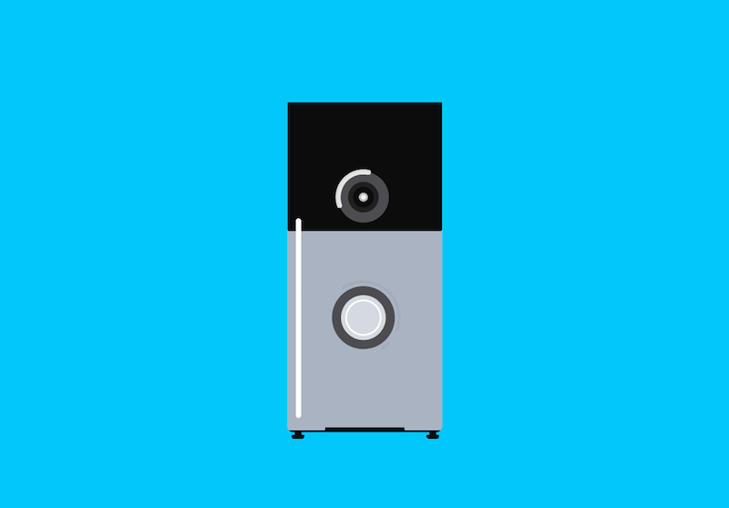

Esp 32 Cam
This ESP-32 project showcases the utilization of advanced microcontroller technology to develop an innovative home security system. With features including motion detection and live video playback, it offers comprehensive surveillance capabilities to enhance home safety. Designed with a focus on reliability and functionality, this project represents a significant milestone in the team's portfolio, highlighting their commitment to delivering cutting-edge solutions for real-world applications.